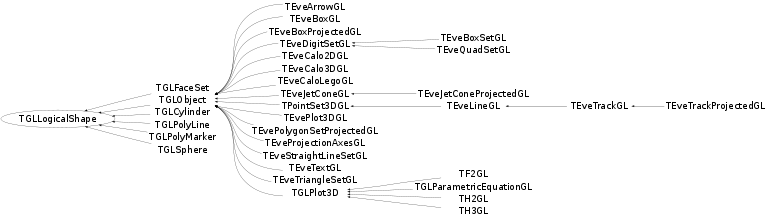

class TGLLogicalShape
Abstract logical shape - a GL 'drawable' - base for all shapes - faceset sphere etc. Logical shapes are a unique piece of geometry, described in it's local frame - e.g if we have three spheres in : Sphere A - Radius r1, center v1 Sphere B - Radius r2, center v2 Sphere C - Radius r1, center v3 Spheres A and C can share a common logical sphere of radius r1 - and place them with two physicals with translations of v1 & v2. Sphere B requires a different logical (radius r2), placed with physical with translation v2. Physical shapes know about and can share logicals. Logicals do not about (aside from reference counting) physicals or share them. This sharing of logical shapes greatly reduces memory consumption and scene (re)build times in typical detector geometries which have many repeated objects placements. TGLLogicalShapes have reference counting, performed by the client physical shapes which are using it. Display list information is also stored here, possibly per LOD level. Most classes do not support LOD (only sphere and tube) and therefore reasonable defaults are encoded in the following virtual functions: * ELODAxes SupportedLODAxes() { return kLODAxesNone; } * Int_t DLCacheSize() { return 1; } * UInt_t DLOffset(lod); // Transform lod into DL offset. * Short_t QuantizeShapeLOD(); // Quantize lod. Classes that have per-LOD display-lists than override these functions. 'UShort_t fDLValid' is used as a bit-field determining validity of each quantized LOD-level; hopefully one will not have more than 16 LOD levels per class. See also: TGLPhysicalShape::CalculateShapeLOD() where LOD is calculated. See base/src/TVirtualViewer3D for description of common external 3D viewer architecture and how external viewer clients use it.
Function Members (Methods)
This is an abstract class, constructors will not be documented.
Look at the header to check for available constructors.
public:
protected:
| void | PurgeDLRange(UInt_t base, Int_t size) const |
private:
| TGLLogicalShape& | operator=(const TGLLogicalShape&) |
Data Members
protected:
| TGLBoundingBox | fBoundingBox | ! Shape's bounding box. |
| UInt_t | fDLBase | ! display-list id base |
| Bool_t | fDLCache | ! use display list caching |
| Int_t | fDLSize | ! display-list size for different LODs |
| UShort_t | fDLValid | ! display-list validity bit-field |
| TObject* | fExternalObj | ! Also plays the role of ID. |
| TGLPhysicalShape* | fFirstPhysical | ! first replica |
| Bool_t | fOwnExtObj | ! External object is a fake |
| UInt_t | fRef | ! physical instance ref counting |
| Bool_t | fRefStrong | ! Strong ref (delete on 0 ref); not in scene |
| TGLScene* | fScene | ! scene where object is stored (can be zero!) |
Class Charts
{kind=link}
{kind=link}
{kind=link}
{kind=link}

Function documentation
void SubRef(TGLPhysicalShape* phys) const
Remove reference to given physical shape, potentially deleting *this* object when hitting zero ref-count (if fRefStrong is true).
UInt_t UnrefFirstPhysical()
Unreference first physical in the list, returning its id and making it fit for destruction somewhere else. Returns 0 if there are no replicas attached.
Bool_t SetDLCache(Bool_t cached)
Bool_t ShouldDLCache(const TGLRnrCtx& rnrCtx) const
Returns kTRUE if draws should be display list cached kFALSE otherwise. Here we check that: a) fScene is set (Scene manages link to GL-context); b) secondary selection is not in progress as different render-path is usually taken in this case. Otherwise we return internal bool. Override this in sub-class if different behaviour is required.
void DLCacheClear()
Clear all entries for all LODs for this drawable from the display list cache but keeping the reserved ids from GL context.
void DLCacheDrop()
Drop all entries for all LODs for this drawable from the display list cache, WITHOUT returning the reserved ids to GL context. This is called by scene if it realized that the GL context was destroyed.
void DLCachePurge()
Purge all entries for all LODs for this drawable from the display list cache, returning the reserved ids to GL context. If you override this function: 1. call the base-class version from it; 2. call it from the destructor of the derived class!
Short_t QuantizeShapeLOD(Short_t shapeLOD, Short_t combiLOD) const
Logical shapes usually support only discreet LOD values, especially in view of display-list caching. This function should be overriden to perform the desired quantization. See TGLSphere.
void Draw(TGLRnrCtx& rnrCtx) const
Draw the GL drawable, using draw flags. If DL caching is enabled (see SetDLCache) then attempt to draw from the cache, if not found attempt to capture the draw - done by DirectDraw() - into a new cache entry. If not cached just call DirectDraw() for normal non DL cached drawing.
void DrawHighlight(TGLRnrCtx& rnrCtx, const TGLPhysicalShape* pshp, Int_t lvl = -1) const
Draw the logical shape in highlight mode. If lvl argument is less than 0 (-1 by default), the index into color-set is taken from the physical shape itself.
void ProcessSelection(TGLRnrCtx& rnrCtx, TGLSelectRecord& rec)
Virtual method called-back after a secondary selection hit is recorded (see TGLViewer::HandleButton(), Ctrl-Button1). The ptr argument holds the GL pick-record of the closest hit. This base-class implementation simply prints out the result.
void InvokeContextMenu(TContextMenu& menu, UInt_t x, UInt_t y) const
Invoke popup menu or our bound external TObject (if any), using passed 'menu' object, at location 'x' 'y'
TGLLogicalShape& operator=(const TGLLogicalShape& )
void DirectDraw(TGLRnrCtx& rnrCtx) const
Bool_t KeepDuringSmartRefresh() const
Override in sub-classes that do direct object rendering (e.g. TGLObject).
{ return kFALSE; }Bool_t SupportsSecondarySelect() const
Override in sub-classes that support secondary selection (e.g. TPointSet3DGL).
{ return kFALSE; }